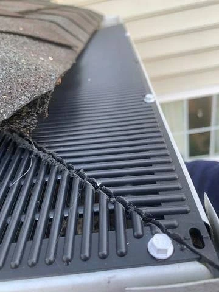
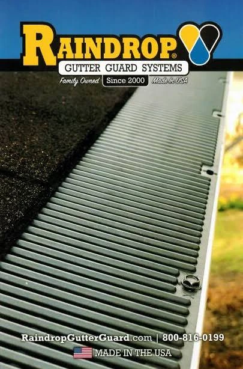
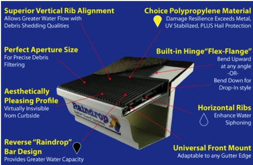

6-inch seamless gutters.
Made for your home.
Give your roofline a finishing touch with seamless gutters custom-made right at your property. Ask Durden Roof Care about adding RainDrop® gutter guards to your gutter system.
Serving Mississippi & Alabama · Complimentary estimates

A custom fit starts at your home.
Our focus is straightforward: 6-inch seamless gutters made on-site to suit your home’s roofline.
Planning a full roof replacement? Complete your roofing project with new gutters. We’ll walk through your project with you and include the gutter work in your estimate.
Tell us about your project →- 6-inch seamless guttersThe gutter size at the center of our service.
- Custom-made on-siteMade at your property, with your home’s measurements in mind.
- RainDrop guard optionsDiscuss gutter protection as part of your project.

Add RainDrop gutter guards.
RainDrop offers a low-profile gutter guard made from UV-stabilized polypropylene, designed to fit both 5-inch and 6-inch gutters. See the manufacturer’s product details.
We’ll help you explore RainDrop as an addition to your gutter project and explain the installation and care considerations for your home.
Take a closer look at the RainDrop design

The manufacturer’s diagram shows the ribbed surface, flexible flange and front-mount design. Explore RainDrop’s design and fit information.
A few questions, answered.
What size gutters do you offer?
This service focuses on 6-inch seamless gutters, custom-made on-site for your home.
Can gutters be included with my roof replacement?
Yes. Tell us you’d like new gutters when you request your roof-replacement estimate, and we’ll help you plan the project.
Can I ask for RainDrop gutter guards?
Yes. Mention RainDrop when you contact us so we can discuss the product and its suitability for your gutter project.
How do I get a price for my home?
Call (228) 229-4704 or request a complimentary quote. Tell us about the gutters you need and whether you’d like to include RainDrop guards.
Let’s complete your gutter project.
Talk with Durden Roof Care about 6-inch seamless gutters and RainDrop guard options.